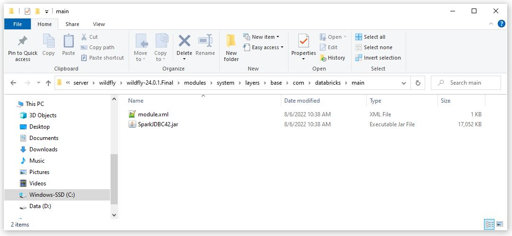
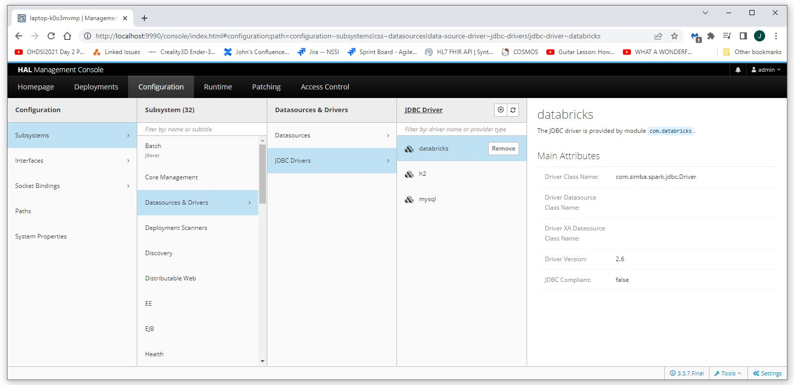

Deploy a Database Driver Jar File to Wildfly (Databricks)
Before a JDBC connection or connection pool can be created,
the database driver needs to be deployed to Wildfly.
This document details how to deploy and configure the jar file for the database driver.
Database drivers for the most common versions used by this project are included.
Database Drivers
The following are the most common database drivers used by this project.
Download and Install the Database Driver Jar File
Download the appropriate jar file (we will be using Databricks as an exmaple here).
Move the jar file to C:\_YES\server\wildfly\wildfly-24.0.1.Final\modules\system\layers\base\com\databricks\main.

Add the module.xml File
Add a module.xml file to the folder that contains the jar file.
The module.xml file needs to contain the following.
The file for mysql can be downloaded from
here.
<module xmlns="urn:jboss:module:1.5" name="com.databricks">
<resources>
<resource-root path="SparkJDBC42.jar" />
</resources>
<dependencies>
<module name="javax.api"/>
<module name="javax.transaction.api"/>
</dependencies>
</module>
Add the Deployment Descriptor for the Database Driver to standalone.xml
Add the following lines to the standalone.xml file below where the "h2" driver is defined
<driver name="databricks" module="com.databricks"/>
Confirm the Driver Has Been Successfully Deployed
Restart the server and navigate to Configuration->Subsystems->Datasources & Drivers->JDBC Drivers.
The databricks JDBC driver should appear in the JDBC Driver column.
